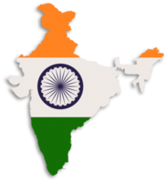

INDIA: A Tapestry of Diversity, Culture, and Progress
India, officially known as the Republic of India, is a vast and vibrant country in South Asia. With a rich cultural heritage, a deep historical legacy, and a dynamic modern identity, India stands as one of the most fascinating nations in the world. Bounded by the Himalayas in the north and surrounded by the Indian Ocean, Arabian Sea, and Bay of Bengal, India is not just a geographical entity—it is a civilization that has evolved over thousands of years and continues to thrive in the 21st century. India is the seventh-largest country in the world by land area and the most populous, with over 1.4 billion people. It is a land of immense diversity—linguistically, culturally, ethnically, and religiously. The Indian Constitution recognizes 22 official languages, and over 1,600 dialects are spoken across the country. The major religions of the world—Hinduism, Islam, Christianity, Sikhism, Buddhism, and Jainism—have deep roots in India, and many of them originated here. This spiritual richness is visible in the countless temples, mosques, churches, gurudwaras, and monasteries that dot the landscape. India's history dates back to the Indus Valley Civilization, one of the world’s earliest urban civilizations, flourishing around 2500 BCE. Over the centuries, India witnessed the rise and fall of great empires such as the Mauryas, Guptas, Cholas, Mughals, and Marathas. The country became a crucial center for trade, culture, and learning during ancient and medieval times. With the arrival of European powers and the eventual colonization by the British, India faced nearly 200 years of foreign rule. The struggle for independence, led by figures like Mahatma Gandhi, Jawaharlal Nehru, Subhas Chandra Bose, and countless other freedom fighters, culminated in India gaining independence on August 15, 1947. Post-independence, India adopted a democratic system and became a sovereign republic on January 26, 1950. The Indian Constitution, the longest in the world, guarantees fundamental rights to its citizens and lays the foundation for a secular, socialist, and democratic republic. Over the decades, India has maintained its commitment to democracy and free elections, making it the world’s largest democracy. India’s economic journey has been remarkable. From a primarily agrarian economy at independence, it has transformed into one of the world’s largest and fastest-growing economies. Sectors such as information technology, pharmaceuticals, space technology, automotive, and manufacturing have seen tremendous growth. Cities like Bengaluru, Hyderabad, Pune, and Gurugram have emerged as global tech hubs, attracting investment and talent from all over the world.
Agriculture still plays a vital role in India’s economy, providing employment to a significant portion of the population. The Green Revolution in the 1960s brought about self-sufficiency in food production. Today, India is among the top producers of rice, wheat, sugarcane, cotton, and milk. At the same time, the service sector, particularly IT and telecommunications, contributes a major share to the national GDP. India’s contribution to science and technology is noteworthy. The Indian Space Research Organisation (ISRO) has achieved significant milestones, including the Chandrayaan (moon mission) and Mangalyaan (Mars mission), placing India among elite space-faring nations. In recent years, Indian startups have also made a mark globally, fostering a spirit of innovation and entrepreneurship among the youth. Culturally, India is a kaleidoscope. From classical dances like Bharatanatyam and Kathak to vibrant folk traditions like Bhangra and Garba, every region showcases its unique art forms. Indian cuisine, with its blend of spices, flavors, and techniques, is celebrated across the world. Bollywood, India’s film industry based in Mumbai, is one of the largest centers of film production and enjoys a massive fan base globally. Education and literature have always been at the core of Indian civilization. Ancient centers like Nalanda and Takshashila were once global magnets for learning. In modern times, Indian authors, poets, scientists, and intellectuals like Rabindranath Tagore, C.V. Raman, Amartya Sen, and A.P.J. Abdul Kalam have earned international acclaim. Institutions like the IITs, IIMs, and AIIMS are considered among the best in their respective fields. Despite numerous challenges—poverty, population pressure, environmental issues, and social disparities—India continues to progress. The government’s initiatives like Digital India, Make in India, Swachh Bharat (Clean India), and Startup India reflect the country’s vision for inclusive growth and development. India’s youth population, one of the largest in the world, offers immense potential to drive innovation and change. In conclusion, India is a country that seamlessly blends ancient traditions with modern ambitions. It is a nation where history and future walk hand in hand, where the rhythm of festivals, languages, and ideas creates a symphony of life. As India continues to rise on the global stage, it remains deeply rooted in its values of unity in diversity, resilience, and a relentless spirit of growth.